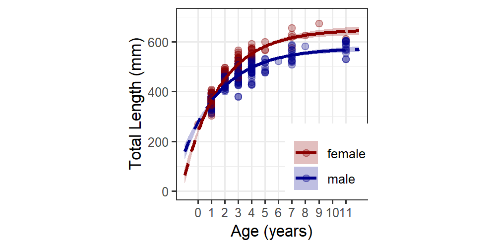
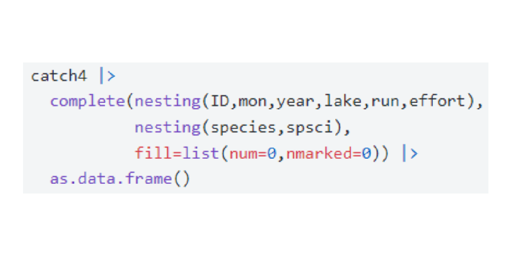
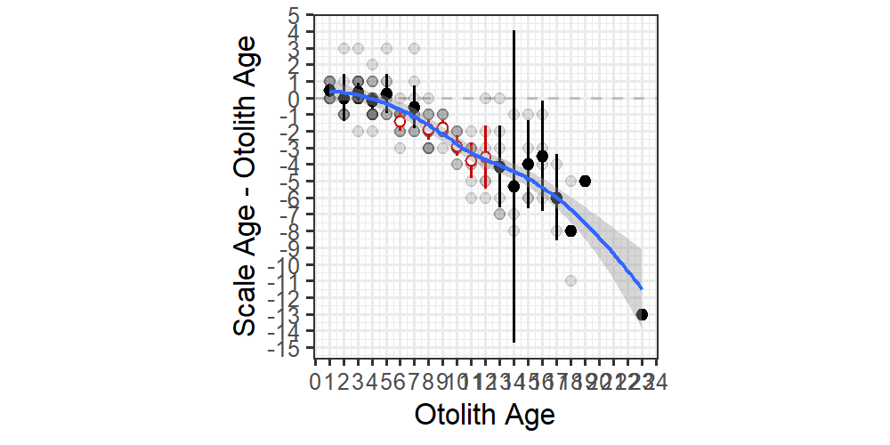
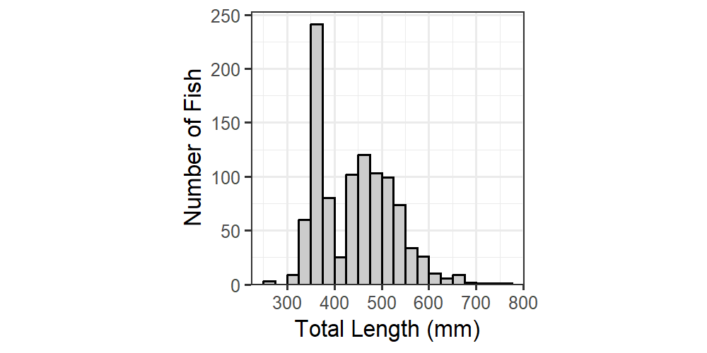
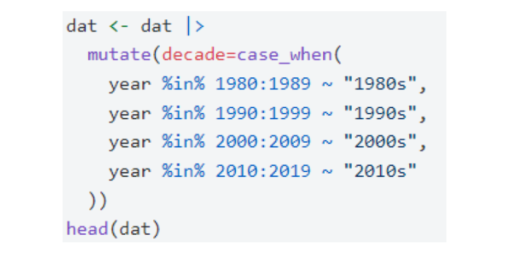

Posts
Books
Packages
Data
fishR (alphabetical)
fishR (by topic)
Comprehensive (by package)
Comprehensive (by topic)
R for Fisheries Analyses and Tasks
Categories
All
(11)
Age
(4)
Age Comparisons
(2)
Biomasss
(1)
CPE
(1)
Data Wrangling
(2)
Growth
(4)
Histogram
(1)
Length Frequency
(2)
Size
(4)
Teaching
(2)
Weight-Length
(1)
ggplot2
(5)
Order By
Default
Modified - Oldest
Modified - Newest
Published - Oldest
Published - Newest
Author

von Bertalanffy Growth Plots II
10 min
How to plot multiple von Bertalanffy growth models with data.
Derek H. Ogle
Jan 2, 2019
von Bertalanffy Growth Plots I
10 min
How to plot one von Bertalanffy growth model with data.
Derek H. Ogle
Dec 31, 2019
Pauly
et al.
(1992) Seasonal Cessation Growth Model
2 min
Announcement of an algorithm to fit the Pauly
et al.
(1992) seasonal cessation growth model
Derek H. Ogle
Nov 11, 2016
Mean Weights at Ages From Lengths
15 min
Demonstrates concerns and corrections with estimating mean weight from observed lengths and a weight-length relationship.
Derek H. Ogle
Aug 9, 2017
Ridgeline Length Frequency Plots
2 min
How to visualize multiple length frequencies as ridgline plots.
Derek H. Ogle
Jul 28, 2017

Adding Zero Catches
9 min
Add zeroes for species not caught so that CPE calculations are correct
Derek H. Ogle
Apr 19, 2018
Half-Life Property of K
4 min
Demonstrate that K is the time it takes for a mean fish to grow halfway to the aymptotic length.
Derek H. Ogle
Jun 12, 2016
Age Comparison Results for Individual Fish
1 min
Demonstrates how to extract age comparison results for individual fish from the object returned by
ageComparisons()
.
Derek H. Ogle
Sep 5, 2015

Age Bias Plots in ggplot2
8 min
Flexibly construct age bias and age difference plots using ggplot2
Michael Lant
Mar 15, 2021

Length Frequency Histograms in ggplot2
5 min
Flexibly construct length frequency histograms using ggplot2
Derek H. Ogle
Dec 28, 2019

Collapsing Categories or Values
7 min
How to collapse categories or values into other categories
Derek H. Ogle
Mar 30, 2018
No matching items